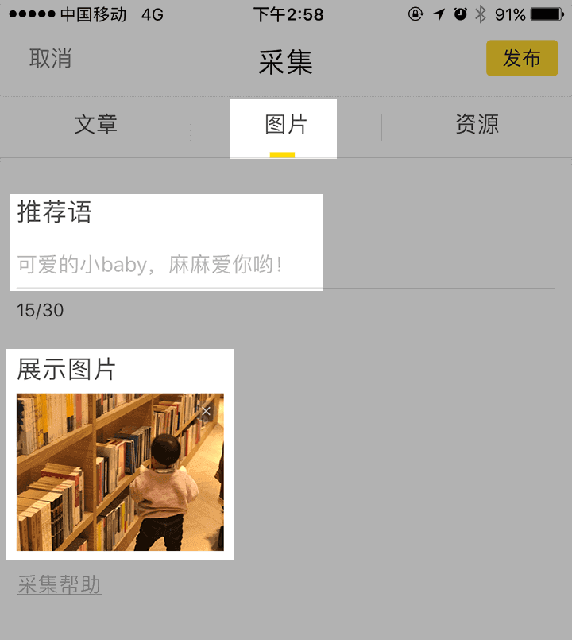
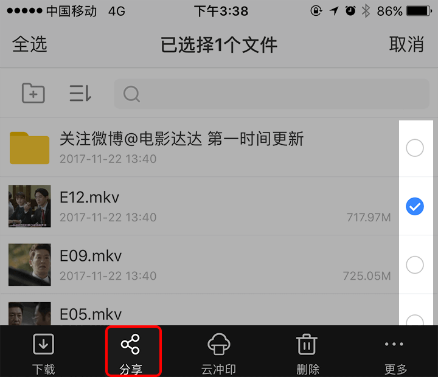

快马1.4.0版本全新加入值得看版块，提供既有趣也有品质的阅读内容，每一篇内容都来源于用户自己的精心采集，保证给到大家各不相同的奇妙体验。
小报用户qq群：347382327
小报用户qq群：347382327
-
如何采集文章？
第一步，在微信或快手中看到优质的内容打开后，复制其链接；微信中复制链接的方式如下： 快手中复制链接的方式如下：第二步，打开快马APP进入值得看版块，点击左上角“+”，进入发布采集的页面；
第三步，粘贴刚刚的内容地址链接，选择合适的归属分类，点击发布；
（分类不对，也可能不会采集上线哦） -
如何采集图片和资源？
最新版本的快马，不论是手机里的图片、gif动图还是百度网盘中的资源，都可以被采集了呢！
【图片采集】
选择上传不仅有趣还有内涵的图片才能吸引其他用户的点击和点赞，全新版本支持gif动图哦，动起来更刺激眼球！还不快去相册里面选一张带感的图吗？【资源采集】
第一步，将网盘中优质的内容，选择之后点击屏幕下方的分享按钮。出现提示弹窗之后进行复制链接。
第二步，按照下图的方式填写完信息即可；
重要的是，资源一旦被别人打赏，采集者可得金币哟！
资源说明
- 资源均来源于用户自行采集，零钱打赏之后，您即可获得资源；
- 获得资源后，请尽快转存或者下载，避免丢失；
- 打赏之后发现资源失效，可在24小时内内举报，审核通过将给予金币补偿;
-
采集获得大量奖励？
采集的内容上线后，被大家阅读及点赞的内容会不同机率的获得大量金币奖励。
（敲黑板！！！越深度阅读，奖励的金币越多哦） -
采集规范